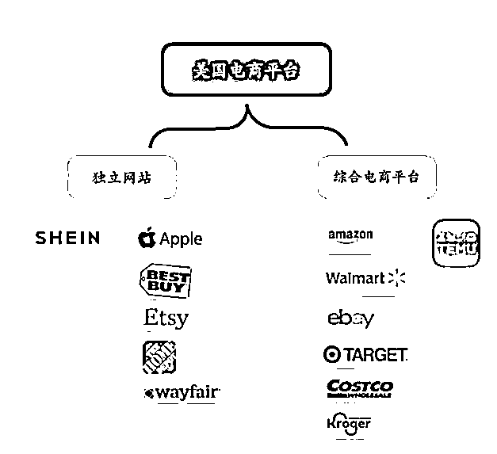
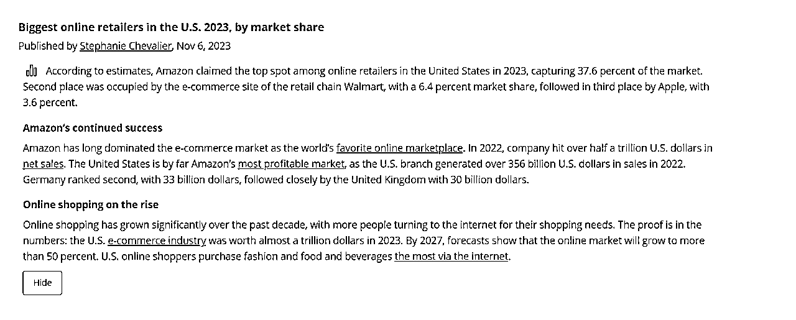
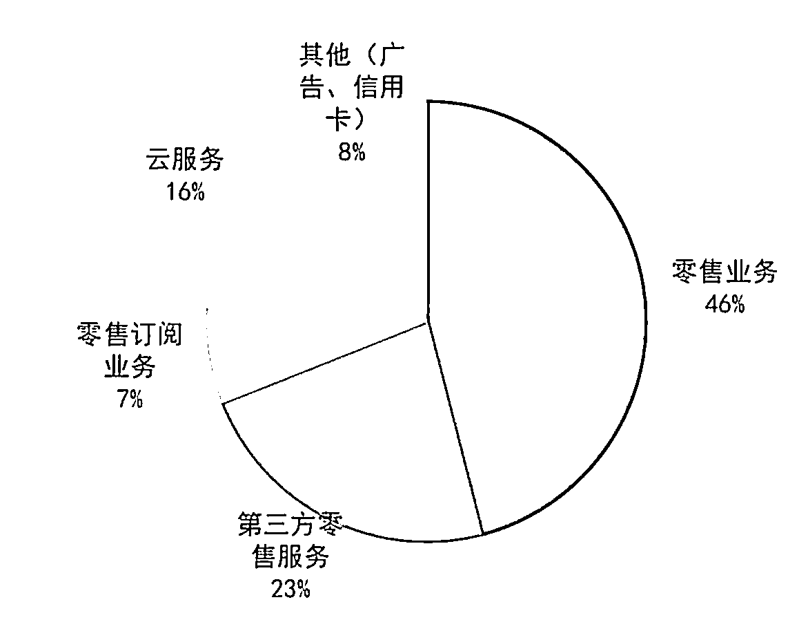
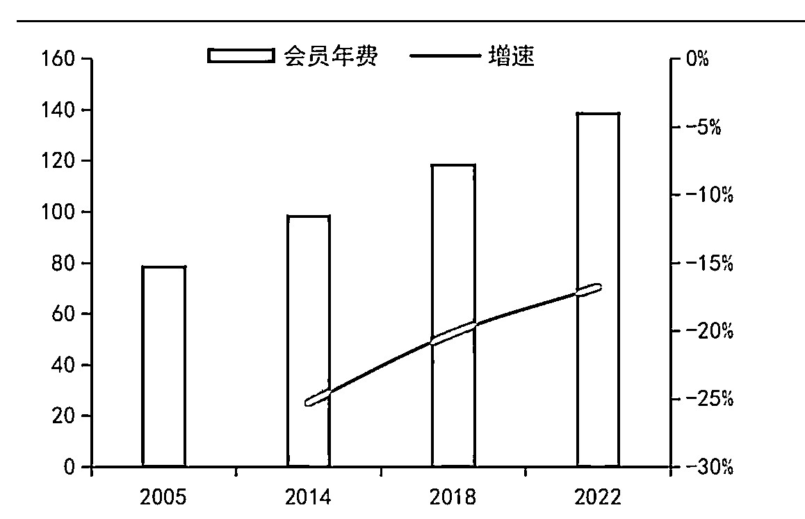
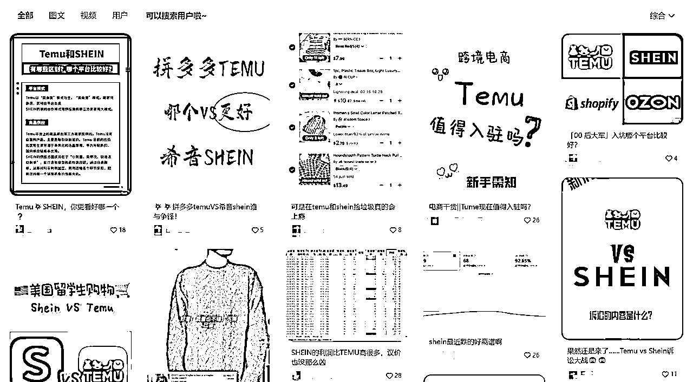
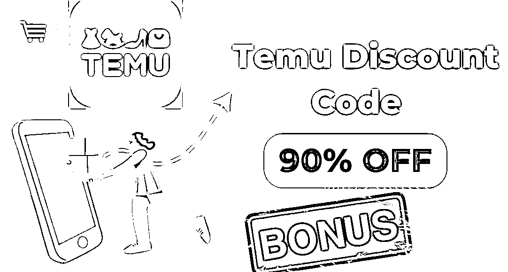
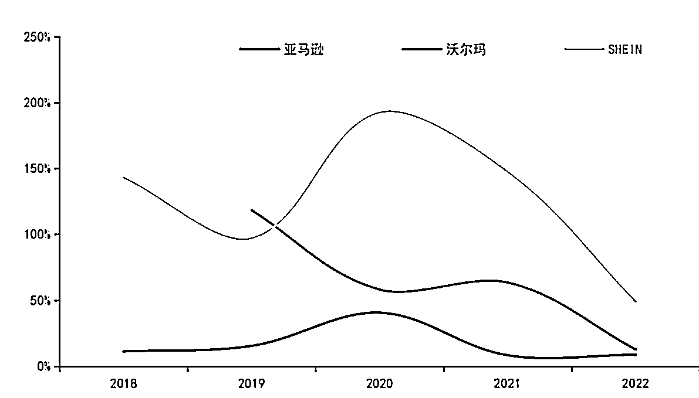

来源：https://infinitereshaping.feishu.cn/docx/ZcS9dbk1bojIuMxC5r7c0eEZnjh
前段时间，一打开朋友圈
就是Temu卖家和服务商刷屏爆单...
过完旺季，小紫也得闲，准备来仔细的研究一下。
不少卖家问我，要不要转赛道做新型平台
问我觉得怎么样？
我统一回答：不怎么样。
为什么这么笃定，今天就从跨境电商的大环境，
带着大家分析一下局势，理清思路。
其实，无论是刚入局的新手卖家，还是说有一定沉淀的亿级卖家。
做任何战略决策，都要先从整体局势再到个人角度去分析。
今天，小紫从宏观到微观，从全球到个体，
和大家聊聊我对“要不要做新型平台？”的看法。
近几年跨境电商平台层出不穷，
“黑马”Temu、风很大的Shein、稳居榜一的亚马逊、零售巨头沃尔玛等等
今年无论是做哪个平台，都是有发展的空间的。

美国的跨境电商市场，主要分为 品牌独立站 和 综合电商平台 两大板块。
据 Statista 数据表明，亚马逊将在 2023 年成为美国在线零售商中的第一名，占据 37.6% 的市场份额。位居第二的是零售连锁店沃尔玛的电子商务网站，占有 6.4% 的市场份额，第三位是苹果公司，占有 3.6% 的市场份额。

亚马逊作为老牌电商平台，沉淀时间最长，市场容量占比也是最大。
2023年，已经占到市场的 37.6% 的，在电商市场是遥遥领先的程度。
它2022年的数据，净销售额达1424亿美元，其中北美市场占总收入的61%。

2022年亚马逊收入构成（数据来源：statista）
亚马逊市场占有率今年仍稳居首位，但它复杂的收费结构和热门品类的剧烈竞争。
对中小型商家来说，不算友好。
再来看近些年，新入局者Shein和Temu。
凭借产品力和性价比，通过全托管模式迅速崛起。
为许多做亚马逊电商的企业，带来新的竞争压力。
今年，都说Temu是“跨境黑马”，
在海外“大杀四方”，“推介奖励”拉新狂潮，“钞能力”涨粉获客
一股浓烈的“砍一刀”既视感，还是那熟悉的配方。
小紫身边也有不少卖家想转型做Temu。
从平台规则、发展多角度综合考虑。
我是不建议新手卖家做Temu的。
有些卖家认为：风浪越大，鱼越贵，富贵只能险中求。
我想说，你一定是电视剧看多了。
实际上，行业发展已经很成熟了，哪有那么多鱼，都是韭菜...
年底平台招商利好的原因，
小紫也收到不少咨询，
很多老板，拿着资金，想跨行做跨境电商。
但聊两句你就发现，
他们压根不了解亚马逊平台，小紫就借势多说两句。
亚马逊其实最早是做线上书店的。
它成为如今发展成电商领域的市场榜一，有几个关键节点。
1994-2000年，早期品类及国际扩张
亚马逊从网上书店，迅速实现国际化，扩充音乐和其他商品类别，成为全球最大在线书店的地位。
这一时期，亚马逊通过拓展产品种类，打开了国际市场，奠定了它在全球电商领导地位的基础。
2001-2009年，改进供应链物流系统
亚马逊在这个时期，推出了大家熟知的"泡面搭档" —— Kindle。
迅速扩大了亚马逊在电子书市场的份额。
当时小紫身边也是人手一个Kindle，数字图书时代在当时达到了顶峰。
这个时期还有一个更关键的节点，第三方平台打开。
亚马逊允许其他卖家，在亚马逊平台上销售商品。
这个时期的亚马逊卖家，也是最早一批深圳湾业主。
2010-至今，大力投资技术与新零售
亚马逊推出了FBA服务，形成了强大的物流网络。
建立Prime会员服务，极大的提高了用户粘性。
加强云计算业务，以及大力投资新零售。
在2018年与Shopify达成协议，允许Shopify的商家使用Amazon Pay和"Buy with Prime"功能
极大的拓展了Prime会员服务的影响力。
直到2018年，亚马逊市值突破1万亿美元，成为全球市值最高的公司之一。

亚马逊会员费趋势及增速
亚马逊的成功，是必然。
它在不同时期持续创新、拓展业务和投资新兴领域的决心。
才巩固了它在电商和科技领域的领导地位。
沃尔玛相信大家都很熟悉了。
放眼整个市场，亚马逊必然是会收到沃尔玛以及其他新兴平台的冲击。
沃尔玛持续输出"天天低价”的经营理念，受到很多本土消费者的喜爱。
全球范围内，沃尔玛在19 个国家已设有 10,500家门店。
截止2022年底，沃尔玛仍是全美零售超市市占率最高的。
旗下的沃尔玛超市和山姆会员店占比达 29.9%。
从2010 年- 至今，沃尔玛也开拓线上业务。
2022 年沃尔玛净销售额达 5677 亿美元，其中电商净销售额达到732亿美元。
同比去年增长 12.79%，占其总零售额的 13%。
尽管沃尔玛电商作为后起之秀，没有亚马逊市场占比那么高，
但它庞大的实体门店做业务基础，实现多渠道配货优势。
其实体店密度远超亚马逊仓储分布。
因此在当日达服务上可以满足更多用户的需求，对亚马逊构成了有力竞争和威胁。
用户方面，沃尔玛主要购买人群是对价格敏感的中低收入群体。
用户平均年龄在 46 岁，以女性用户为主，占 60%；
相比之下，亚马逊的用户群体更加年轻，更注重品质，且不以特定性别为主，分布更为平均。
综合来看，沃尔玛的定位更侧重于为中低收入群体，提供经济实惠的商品。
而亚马逊则更注重吸引年轻、追求品质的广泛用户群体。
这两者在用户定位上存在明显差异，也就形成了用户之间最终购买力的差异。
近些年，风很大的Temu和Shein招商不断。
入局者个个都赚得盆满钵满。
身边的亚马逊卖家都开始计划今年要转型Temu。
新兴平台，市场趋势真的如此向好吗？

Temu，拼多多海外版，秉持着“超级低价”营销理念，快速的打开美国中低端市场。
同一款浴室地垫，在亚马逊上是9.99美元，在 Temu 的价格可能是3美元，很夸张。
它通过全托管模式，吸引供应商，采用竞价机制将卖家利润压缩至最低。
给到客户最高达到90%off 的折扣，对卖方来说，属于是天降正义了...

Shein在供应链上的优势，更为明显。
它的“产品多，上新快，时尚度高，高性价比”得益于强大的柔性供应链和优秀的供应链管理能力。
供应商已突破3000家，每天上新超过 2000 件。
可以说，Shein的供应链为它更新速度、产品性价比提供了重要支撑。
Shein 计划在 2023 年完成 100 家供应商工厂的实体扩建和改造。
Temu和Shein在众多新兴平台中，算是十分成功的。
其他平台可能很难复制其完整的商业模式。
但招商的成功不仅仅依赖于价格，还需要在用户体验、品牌形象和社交裂变等多方面取得平衡。
且低价和快时尚单品的模式，在后期可能会引发环境可持续性和产品质量的争议。
这些问题可能会对品牌形象和消费者忠诚度都会产生一定影响。

亚马逊、沃尔玛、Shein 近五年电商GMV增速%
亚马逊会受新兴平台的冲击吗？
答案是必然的。
但小紫敢说，未来5年，亚马逊仍然是跨境电商的主流市场。
未来5年，沃尔玛和 Shein、Temu 一定会飞速增长。
预测 Amazon 市场份额将从2023年 37% 回落至 2027年 35.1%；
沃尔玛将持续稳定增长，预计2027年市场份额增长至 12.4%；
Shein 市场份额将稳步提升至2027年的0.89%。
而 Temu 预计将增长更显著，市场份额有望在2027 年达到2.3%。
预测基本逻辑：公司市场份额 = 公司电商总额/美国电商零售总额（想了解具体测算数据，可私聊我）
（以上预测数据来源：statista）
很明确，未来五年，亚马逊会处于下降的状态。
它的市场份额，预测会回落 2.5%左右，这个数字什么意思呢？
也就是说，至少五年内，亚马逊依然是龙头老大。
其实平台的选择，这里面，有一个非常核心的点是什么呢？
核心在于它是否能品牌化。
在电商领域，提升品牌影响力和用户粘性保持高速增长，才是实现长期发展的关键。
而这两点，是亚马逊10年前乃至今日都在践行的事。
放眼未来五年，归来依旧做亚马逊。
那些新兴平台的卖家们，其实并没有完全放弃亚马逊而换平台运营。
因为亚马逊有庞大的用户基础和全球化的布局。
这对卖家来说是十分利好的。
所以，2024年，我仍然推荐大家，踏踏实实做亚马逊。
在电商行业发展飞速的这些年中，
不同平台，都有各自的优势和特点。
他强任他强，清风拂山岗。
富贵也未必险中求。
这个行业，多少人为了得到大鱼，追名逐利。
信奉着“马无夜草不肥，人无横财不富”。
不惜代价往上爬，丢失了最初的本心。
而小紫想说，
坚守初心，保持对行业的深刻理解。
灵活应对市场，不被浮华的表象所迷惑。
相信自己，用实实在在的努力去追逐梦想才是成功的第一要义。
全文完。
以下是我的经典文章，99%关注我的人都会阅读，建议你一定要好好看一看：
精细化运营法：
干货型：
职场经验型：
如果觉得小紫的这篇文章聊得还挺有趣
欢迎来交个朋友~